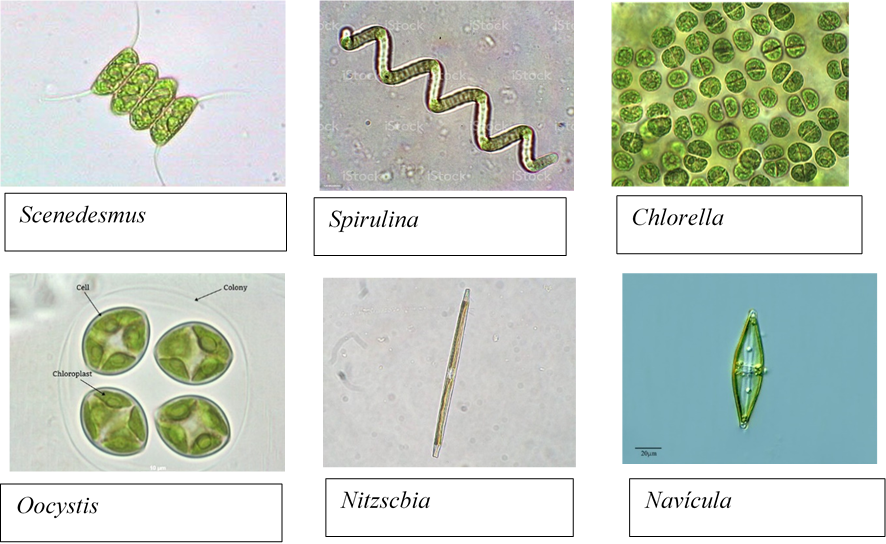

Distinguir las características taxonomícas de las microalgas
Explicar los efectos de los cambios de los parámetros de crecimiento de microalgas.
Interpretar los cambios cinéticos del crecimiento de las microalgas.
Identificar los Medios de cultivo adecuados para cada especie de microalga.
Aplicar el sistema de cultivo adecuado para el crecimiento de las microalgas.
Evaluar la composición nutricional de las microalgas.
Microalgas
CONTENIDO
OBJETIVO
Capacitar a los pescadores y al público en general sobre la siembra y cultivo de microalgas para la alimentación de peces nativos del lago Titicaca.

Obra publicada con Licencia Creative Commons Reconocimiento Compartir igual 4.0